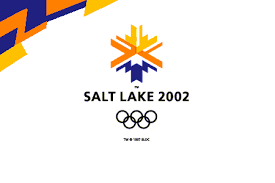

Park City is were the Winter 2002 Olymics were held. It is a popular vacation spot nestled in the mountains. Here are some interesting facts about Park City:
| Name | Sport | Event |
|---|---|---|
| Kelly Clark | Snowboarding | Women's Halfpipe |
| Ross Powers | Snowboarding | Men's Halfpipe |
| Casey FitzRandolph | Speed Skating | Men's 500 metres |
| Chris Witty | Speed Skating | Women's 1000 metres |
| Jill Bakken and Vonetta Flowers | Bobsleigh | Two-woman |
| Derek Parra | Speed Skating | Men's 1500 metres |
| Apolo Anton Ohno | Short Track Speed Skating | Men's 1500 metres |
| Jimmy Shea | Skeleton | Men's |
| Tristan Gale | Skeleton | Women's |
| Sarah Hughes | Figure Skating | Ladies' Singles |
More info can be found at 2002 Winter Olypics Wikipedia page.
